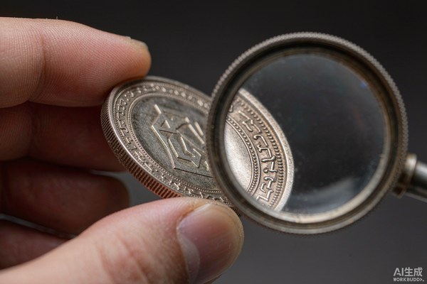
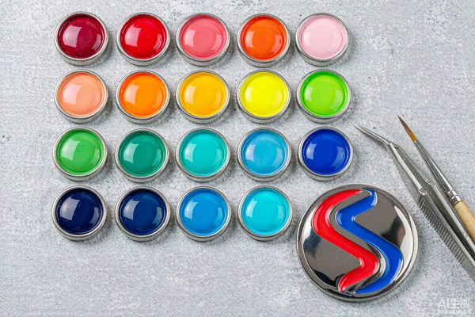

Digital Proof vs Physical Sample: What Each Can and Can't Tell You
Most buyers treat the proof and the sample as two versions of the same thing, one cheap and one expensive. They are not. They are two different instruments that look at different parts of the problem, and the fastest way to stop wasting time is to know which instrument you are holding.
A digital proof is a rendering of the artwork sitting in its intended position on a coin of the intended size. It is genuinely good at showing you geometry, and geometry is where most coin errors actually live. It shows you whether the text fits, whether the emblem is centered, whether the font is too small for the space, whether the two sides balance, whether the shape and diameter are what you meant. It shows you layout. What it cannot show you is anything about the finished surface, because a rendered surface is light and a metal surface is a mirror.
A physical sample is the opposite. It tells you almost nothing useful about layout, because you already know the layout, you approved it on the screen. What it tells you is finish: how the plating actually looks under real light, how the enamel sits in the recess, whether the relief is crisp or mushy, whether the edge treatment is right, how heavy it feels, and what the color actually is. It shows you material. What it cannot show you is consistency, because one sample tells you how a single coin was made, not how three hundred of them will be made.
| What you want to know | Digital proof | Physical sample | Bulk order |
|---|---|---|---|
| Layout, text fit, centering | Reliable | Unreliable | Reliable |
| Spelling and dates | Reliable | Reliable | Reliable |
| Plating color and quality | Not reliable | Reliable | Reliable |
| Enamel color and coverage | Not reliable | Reliable | Reliable |
| Relief sharpness and fine detail | Not reliable | Reliable | Reliable |
| Edge treatment | Indicative only | Reliable | Reliable |
| Weight in the hand | Not reliable | Reliable | Reliable |
| Consistency across the run | Impossible | Impossible | Reliable |
The practical reading of that table is that the digital proof is the tool for the decisions you can still make cheaply, and the physical sample is the tool for the decisions you cannot. Approve geometry on the screen. Approve finish on the coin. Approve consistency on the bulk run, against a written standard rather than against your memory of the sample. Our guide to designing a challenge coin covers the design decisions themselves, and our manufacturer vetting guide covers how to ask a supplier what their proof and sample process actually is before you are relying on it.
The 10 Things to Verify on a Proof
Here is the checklist. It takes about ten minutes with a physical sample and about four with a digital proof, and every item on it corresponds to a mistake that has actually shipped.
| # | Check | What a failure looks like |
|---|---|---|
| 1 | Every letter, spelled out loud | A misspelled motto on 500 coins, and no way to fix it cheaply |
| 2 | Every date and every number | Wrong year, wrong service number, wrong quantity on the reverse |
| 3 | Text size against the rim | Type running into the edge, or so small it disappears in casting |
| 4 | Minimum line and gap width | Fine lines that fill in with enamel or vanish in the strike |
| 5 | Enamel callouts against the artwork | Color 3 filled where color 2 was intended, across the whole run |
| 6 | Plating specification | Gold plated requested, antique bronze delivered |
| 7 | Edge style | Reeded edge requested, plain edge shipped |
| 8 | Diameter and thickness | A 2.5 inch order produced at 2.25 inch |
| 9 | Both sides, and their orientation | Reverse upside down relative to the obverse on every coin |
| 10 | Logo and trademark accuracy | A stylized mark that does not match your organization's actual logo |
Two of those deserve a note because they get skipped most often. Item four, minimum line width, is the one that separates a design that works in metal from a design that only works on a screen. A hairline in a vector file can look elegant and turn into a filled-in smear once the enamel is flowing or the strike is compressing the field around it. The rule of thumb most factories use is that a line needs to be wide enough to survive the process that touches it, and the person who knows the threshold for your specific style is the factory, which is exactly why this question belongs on the proof review list rather than in your head. Our guide to edge types and plating and finishes cover the specs you should be checking against.
Item ten sounds obvious but shows up more often than you would expect, usually because the artwork came from an old logo file that nobody opened to check. A challenge coin is a physical object that people will hold for years, and it will be examined by people who know your organization. If the logo on the coin is not the logo your members recognise, the coin does not do its job no matter how good the finish is.

How Many Revisions Are Reasonable (and Free)
Two to three rounds is a normal, healthy number for a first design, and this surprises people who expect one. The reason is that the first round is usually about getting the concept onto the coin at all. You approve a layout, the factory returns a rendering with the emblem scaled to fill the field, and it looks different from the flat artwork you designed. Round two fixes the things you did not expect. Round three is usually just a date correction.
What actually matters is not the count but three things that you should settle before you start, ideally in writing on the quote.
Are revisions included or billed per round? A maker confident in its design team bundles a reasonable number of rounds, because getting the proof right protects both sides. A maker that meters every tweak is either understaffed or padding the line. This is also worth noticing as a signal about the production stage that follows: the same attention that produces a fast proof produces a fast run, and a shop that treats design revisions as a revenue line is usually going to treat a delivery date the same way.
What counts as a revision versus a redesign? A revision changes something within the existing design. A redesign changes the concept, and it should trigger a new quote. Without that distinction defined, a buyer who asks for a different emblem and a supplier who counts it as revision two end up in a disagreement about money rather than about the coin. Put the line in the purchase order.
Who gets the final artwork? This belongs here because it is decided at the proof stage and often never revisited. Your artwork files and the tooling reference should be yours, handed over on request. If the supplier suggests they retain the files, that is not a dealbreaker, but you should know it and price it, because a reorder that requires re-drawing from scratch is a reorder that costs more and takes longer than it should. Our guide to mold fees covers the tooling side of the same ownership question.
One more thing worth asking, and buyers almost never ask it: does the revision count reset if the design changes materially? If you approve a layout, then change the layout substantially, the early rounds were spent on a design that no longer exists, and a fair arrangement is to renegotiate rather than to keep pushing against a limit set for a different piece.
Color Matching: Screen vs Physical Enamel
Your screen emits light. A coin reflects it. Those are fundamentally different things, and the difference shows up every single time. The rendered proof will look brighter, flatter and more saturated than the physical coin, and the physical coin will look warmer and darker than you expected in most indoor lighting. Neither is wrong. They are just two different objects.
There is a second factor that catches people: the enamel itself has properties a flat fill does not. It has depth, it has a gloss level, and it has coverage that either meets the metal border cleanly or does not. A rendered color field stops at a mathematical edge. Real enamel flows, and a slightly heavier hand leaves a raised lip where it meets the metal, which catches light and can look like a defect until you understand what it is. Our guide to soft enamel against hard enamel goes deeper into how the two fill processes differ in texture, level and how they photograph.

So how do you actually control color, given that you cannot make a screen match a metal surface? Three mechanisms, in order of usefulness.
Name a Pantone reference for every color. Not a color name. "Dark red" means nothing, because it can mean anything from maroon to brick to burgundy. A Pantone solid coated reference is a specific, printable, checkable instruction that both your designer and the factory can point at. This is the single most effective thing you can do to avoid a color argument at the sample stage. If your supplier cannot tell you which Pantone they will use for a given fill, they are guessing, and you should expect to be surprised.
Ask for a physical reference. If you have an existing object in the right color, a fabric swatch, a painted metal part, anything you can mail, that reference will beat a screen render every time. Physical color samples are one of the reasons a physical sample run is worth doing rather than a token exercise.
Judge on the sample, not on the screen. Once the sample arrives, view it in the light the coins will actually be seen in, which is usually indoor overhead light and not a color-accurate studio. A coin that looks slightly dull under office lighting may be exactly right, and a coin that looks vivid on your monitor may be too bright once it is polished metal. Our 12-point inspection checklist covers how to make that judgment systematic when the bulk run arrives rather than on one sample.
Locking Artwork Without Losing Flexibility
There is a practical way to be both decisive and flexible, and it comes down to understanding what the die actually locks. Not every change is as expensive as a buyer fears, and not every change is as cheap as a supplier suggests.
| Change | What it usually costs | Why |
|---|---|---|
| Fix a typo or a date | Usually low or free | Text is part of the same die operation and the die can often be adjusted |
| Adjust the wording or add a line of text | Low to moderate | May need re-cutting the die, sometimes a new die if the space is tight |
| Change a color callout | Low | No tooling change at all, only the enamel station |
| Move or resize the main emblem | Moderate to high | Relief geometry changes and the die usually has to be re-cut |
| Change the rim, edge or overall shape | High, normally a new mold fee | Different tooling entirely |
| Change the diameter or thickness | Highest, a new die | Every element scales and the whole tooling package is replaced |
That table gives you a practical ordering for a project. Lock the geometry early, because it is the expensive part and because everything else is layered on top of it. Lock the text content reasonably early too, because text is cut in metal and a text error is the mistake that embarrasses people most. Then keep the color callouts flexible until you have seen a physical sample, because colors are the cheapest thing to change and the easiest thing to change badly on a screen.
And a closing thought on how to make the whole stage go better, which is less about technique than about timing: do not approve a proof at the end of a long week because it arrived at the end of a long week. The most common revision errors are made by tired reviewers, and a proof reviewed in a distracted ten minutes is a proof that will come back from production with a problem in it. Give the review a quiet half hour and a checklist, and the sample stage becomes a formality instead of a rescue operation. If you have the artwork ready, send it over and we will return a proof within twelve hours, plus a physical sample if you want one, because the sample is where the conversation actually gets useful.
Want a Proof in 12 Hours?
Send us your artwork or even a rough idea. We will return a digital proof within twelve hours, and a physical sample so you can judge the finish before committing to a run.
Get Free QuoteFrequently Asked Questions
Should I order a physical sample before a bulk order?
For a first order of any size, yes. A physical sample is the only way to see the actual finish, the actual color, the actual weight in the hand and the actual edge, and those are the things a digital rendering cannot show you. The cost is usually a small fraction of a bulk order and the tooling fee is often credited against it if you proceed. For a large reorder of a design you have already approved and produced, a new sample is usually unnecessary because the existing production run is your reference.
How long should it take to receive a challenge coin sample?
The sample itself takes a few days to produce once the artwork is approved, but the delivery is what adds time, because a physical sample is a small parcel that travels by courier. Budget roughly one to two weeks door to door, and considerably longer if the supplier chooses to send it by sea freight because they batch shipments, which some factories do for cost reasons. Ask directly which carrier and which service level will be used, and if the sample is on the critical path for your date, say so.
Is a digital proof enough to approve production?
A digital proof is enough to approve layout, spelling, size and geometry. It is not enough to approve color, plating quality, surface texture or how a fine detail will actually hold up in metal. The practical rule is to approve artwork on the digital proof, then approve finish on a physical sample, and treat the sample as the final word on anything that involves color or surface. If you skip the physical sample, the most common surprises are the enamel color and how thin a detail looks once it is cast.
How many proof revisions are reasonable before production?
Two to three rounds is a normal, healthy number for a first design, because the first round is usually about getting the concept onto the coin and the second is about correcting what you did not expect to see. What matters far more than the count is whether revisions are included in the quote or billed per round, and whether the supplier tells you when a change is structural. A maker who charges for every tweak is usually understaffed, and a maker who offers unlimited revisions on an unlimited basis is usually not charging enough attention to any of them.
Why does the enamel color look different from the digital proof?
Because the proof is rendered on a backlit screen and the coin is not. Screen color is emissive and bright, metal is reflective, and the lighting in a factory or a warehouse is nothing like the lighting on your monitor. The second factor is that the physical enamel has depth, gloss level and coverage, and a rendered fill has none of those properties. This is not a defect and it is not something a supplier did wrong, but it is the single most common source of disappointment, and the only real cure is to specify a Pantone reference for each color and to judge the color on a physical sample rather than on a screen.
Can I still change the design after approving the proof?
You can change some things and not others, and the line runs through tooling. Text, dates, numbers and small layout adjustments can usually still be changed, because they are cut into the die as part of the same operation and the die is often adjusted rather than replaced. A change to the overall shape, the size, the rim treatment or the layout of the main emblem usually means new tooling and a new mold fee. Freeze the geometry early and keep the artwork flexible for as long as possible, because that is where you get the most value out of every revision.
What should a challenge coin sample include?
A useful sample shows the real material and plating, the real enamel type, the real edge treatment, the real diameter and weight, and the real relief depth. A sample that is only one of these is a marketing sample, not a production sample, and approving a coin on it means approving the idea of the coin rather than the coin. If a supplier offers a soft enamel sample when you ordered hard enamel, or a lightweight gold-plated sample when you specified a thick plating, you are not testing the thing you are buying.
How do I know the sample will match the bulk order?
You do not know it for certain until the bulk order, and the honest answer is that no supplier can promise perfect consistency on hand-finished work. What you can do is reduce the gap. Order the sample from the same line that will run your bulk order, ask whether the plating batch and enamel batch will be held for your bulk run, and write an acceptance standard into the purchase order so that a mismatch has a definition and a remedy. A supplier who will hold your plating and enamel for a defined period is taking a real risk on your behalf, and that is worth more than a promise that every piece will be identical.